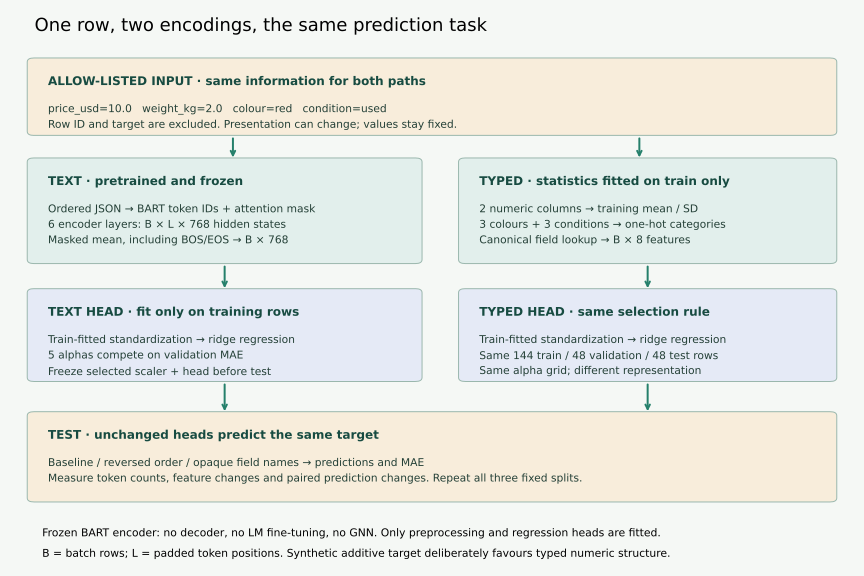
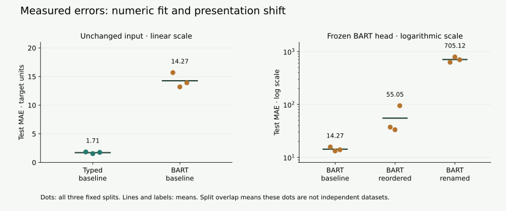

Year 5 · Quarter 1 · Lesson 163
LM encoders for rows
Quick reference · Comparison template · Reproduction contract · Complete measured results
1 · What does the row vector remember?¶
Single win: encode the same row as text and as typed features, then defend an encoder choice using predictions and information loss. Read the core lesson in about 10 minutes; do the notebook comparison in a separate practice session.
Lesson 162 placed a row encoder before graph message passing. That left a gap: what information reaches the graph in the first place? Lesson 125 introduced semantic column types. Here we compare a numerical value carried as a number with that same value carried through language-model tokens. Recall also CARTE in Lesson 74: how you represent a row changes what later computation can use.
Our worked row describes a product: price 10 USD, weight 2 kg, colour red, condition used. A schema names and types these fields. An encoder turns their values into features a prediction model can use. A head is the final fitted mapping from features to the predicted target.
Before asking which encoder wins, ask what information each path receives, what is fitted, and what stays fixed.
2 · Model architecture: two routes from one row¶
Vogel, Hilprecht and Binnig propose serializing rows together with schema, encoding them with BART, and adding graph context. Their prototype adapts BART on table reconstruction before GNN training. Our comparison isolates the row-input decision: it uses a frozen text-pretrained BART encoder and a typed baseline, with no GNN. The pooling and regression head below are course choices, not a reconstruction of their hidden implementation details. Primary reading: §§2–4

Text route. We serialize only allowed inputs:
{"table":"products","price_usd":10.0,"weight_kg":2.0,
"colour":"red","condition":"used"}
Serialization must preserve which value belongs to which field. JSON escaping prevents a quoted string from accidentally becoming another field. IDs and the prediction target never enter the text. A tokenizer maps the string to integer token IDs. A token may represent a word fragment, punctuation or part of a number; it is not a typed database cell.
The pinned facebook/bart-base encoder has six layers and hidden width 768. For a batch of B rows, padding gives L token positions; final hidden states have shape B×L×768. We average real token vectors into B×768 row features. This pooling is explicit; a generic BART output is not automatically a single row vector. Only the encoder runs. BART's pretrained encoder–decoder design and attention-mask interface are documented in the model card and version-pinned API.
Typed route. Fit numeric means/scales and categorical vocabularies on training rows. For each numeric column, compute z=(value−training_mean)/training_SD. A category becomes a one-hot block: one position is 1, others 0. With two numeric columns and three values each for colour/condition, our data gives 8 features. This transparent baseline illustrates type-specific treatment; it is not a trained PyTorch Frame neural encoder.
Read the units. SD means standard deviation, a measure of spread around the mean. Subtracting the mean centers a numeric column; dividing by its training SD expresses the value in units of that spread. Using training statistics keeps validation and test values from changing the fitted transform. MAE, used below to select the head, means mean absolute error: average distance between predictions and targets, in target units.
Worked arithmetic. If the training price mean is 20 and SD 10, price 10 becomes −1. If weight mean is 1 and SD 0.5, weight 2 becomes 2. With category orders [blue,green,red] and [new,refurbished,used], the row becomes [-1,2,0,0,1,0,0,1]. These moments are a hand example, not the experiment's fitted statistics. An unseen category produces an all-zero block in our implementation; that policy trades an explicit unknown signal for simplicity.
Both paths then receive training-fitted feature standardization and a ridge head. Ridge regression minimizes squared training error plus alpha × sum(coefficient²); the intercept is unpenalized. Larger alpha discourages large coefficients. We choose alpha on validation MAE, then freeze the complete pipeline before testing. Different feature dimensions and pretraining histories mean equal head-selection rules do not imply equal model capacity or compute.
3 · Padding, order and names are testable choices¶
A short row might be padded to match another row in its batch. Padding positions must not enter the average. If token vectors are [1,3], [3,7] and padded [900,900], the correct pooled vector is [2,5], not an average of all three. We include BART's beginning/end special tokens and exclude only padding:
pooled = (hidden * mask[:, :, None]).sum(axis=1)
pooled = pooled / mask.sum(axis=1)[:, None]
The mask has shape B×L; adding the last axis broadcasts it over 768 features. A zero denominator is an error. Padding exclusion at pooling complements the encoder's attention mask; both matter.
Here broadcasting applies the same keep/drop value to every coordinate of one token vector. The attention mask stops padding from being read inside the encoder; the pooling mask stops it from entering the final average. BOS/EOS in the diagram mean beginning/end-of-sequence tokens.
Now intervene on presentation. Reverse the field order, or rename the columns to c0…c3, preserving every value. A positional text model receives a different sequence. Our typed route looks up canonical field identities, so these presentation changes leave its vector unchanged. That invariance is built into its input mapping. It would not survive an actual loss of field identity.
This explorer shows actual tokenization saved from the pinned BART tokenizer for the first three fixture rows. It runs no model in your browser. Switch a row or schema presentation and inspect token IDs, token count, and the row's precomputed change in pooled features. Token strings use the tokenizer's vocabulary notation; Ġ marks a preceding space where present. Dense attention-pair count L² is only a size proxy, not measured end-to-end compute.
What text can offer. A pretrained LM is a plausible way to reuse language information in descriptive names and values. That is a hypothesis to test on appropriate data. Turning a number into tokens does not impose arithmetic distance: the character sequence for 20 is not defined to be twice the representation for 10. Conversely, a numeric transform preserves the specified numeric relation but cannot infer the meaning of an unfamiliar product description. Our experiment contains short categories and no free-text descriptions, so it cannot settle that semantic trade-off.
4 · A complete, deliberately narrow comparison¶
We generated 240 synthetic rows and disclosed the target:
target = 2×price + 5×weight + condition_offset + colour_offset + noise
Noise has standard deviation 2. This target is designed to favour a linear numeric/one-hot representation. It tests whether the LM path makes a simple numeric relationship easier or harder to recover; it is not a neutral tournament across all tabular tasks.
For each of three fixed splits, both methods get 144 training, 48 validation and 48 test rows. Preprocessing uses training rows only. Five alphas (0.01,0.1,1,10,100) compete on validation MAE. We keep the selected training-only head without refitting on validation. Reordered/renamed test text goes through that same head. MAE is the average absolute prediction error in synthetic target units; lower is better. Exact protocol and commands
| Encoder | Input presentation | Mean MAE ± split SD | Mean absolute prediction change |
|---|---|---|---|
| typed | baseline | 1.714 ± 0.151 | 0.000 |
| typed | reordered | 1.714 ± 0.151 | 0.000 |
| typed | renamed | 1.714 ± 0.151 | 0.000 |
| bart | baseline | 14.265 ± 1.285 | 0.000 |
| bart | reordered | 55.051 ± 34.406 | 50.765 |
| bart | renamed | 705.122 ± 81.466 | 705.388 |
All 720 row encodings and all six head selections completed. Fresh encoding took 36.2 seconds across the three variants; 117.9 seconds including fetch and checks. These are local CPU timings, not matched throughput benchmarks. Cloud spend: $0.
| Encoding work | Local elapsed time | Features per row |
|---|---|---|
| Typed fit/transform, split 0 | 5.34 ms | 8 |
| Typed fit/transform, split 1 | 4.42 ms | 8 |
| Typed fit/transform, split 2 | 6.16 ms | 8 |
| Frozen BART, baseline | 12.17 s | 768 |
| Frozen BART, reordered | 12.21 s | 768 |
| Frozen BART, renamed | 11.84 s | 768 |
Single local timings for all 240 rows per entry. Typed time includes train-moment/vocabulary fitting and transformation; BART time includes tokenization, forward computation and pooling after loading. Imports, process startup and head fitting are excluded. This is cost accounting, not a controlled speed benchmark.

Read the result causally. The typed path can directly express the target's numeric and categorical terms. Frozen pooled BART features make that relationship less accessible to this head. Renaming also moves representations away from the distribution used to fit the head. Large coefficients or rescaling of low-variance features can amplify such a shift. Our measurements establish the shift and prediction change; they do not isolate each internal cause or prove a general failure of LM encoders.
The typed scores repeat across presentation variants because the canonical features are identical. The three test sets overlap, so their SD describes split variation and is not a confidence interval. A train-mean baseline, every split score and all 864 keyed predictions are retained in the report. The numeric result does not establish transfer to new databases, unseen categories, missing values, or meaningful free-text tasks.
5 · What “full reproduction” means here¶
Local experiment: all rows, three splits, both encoders and both presentation interventions are part of the executable contract. Fresh frozen BART encoding and cached head replay have separate receipts. The notebook defaults to the portable replay so you can inspect and refit the heads cheaply; an explicit cell enables fresh encoding at the pinned revision.
Historical target: the paper's Table 1 wikiTables BART_table versus +GNN reconstruction experiment remains NOT_RUN. Exact data/splits, matching code/checkpoints and enough training details remain unresolved, so historical fidelity is NOT_ESTABLISHED. Our regression comparison is not that experiment, and the paper does not provide a typed-versus-text result to reproduce. Historical contract
6 · Make the comparison yourself¶
In the student notebook, implement three functions whose outputs are used by the experiment:
serialize_row— allow-list inputs, preserve schema/value association and implement both presentation interventions. CHECK rejects target leakage and broken escaping.masked_mean— use the real-token mask and reject empty rows. CHECK rejects a plain padded mean. Stored real token states for the first eight rows let your implementation affect the replayed features; the remaining rows use verified pooled features.choose_alpha— choose from validation losses with a deterministic tie rule. CHECK rejects always choosing the first alpha. The runner uses your choice for all six heads.
Then fill the comparison template: inputs, fitted/frozen parts, shape, cost, three-split MAE, sensitivity, limitation and next falsifiable test. Explain one schema perturbation before looking at its measured output. A useful next test would add a real free-text task, matched target information and held-out entities; it is a proposal, not evidence supplied here.
EXIT: defend your encoder choice in 200–300 words. Name the synthetic bias, a leakage control, the difference between fresh encoding and cached replay, and the historical gap. Passing code checks is author/implementation evidence; your reasoning still needs review. Learner status stays PENDING_WRITTEN_DEFENSE.
Spaced retrieval: tomorrow, derive [2,5] from the masked token example without opening the solution. In one week, explain why a presentation-invariant typed feature map does not demonstrate unseen-schema transfer. Ask the teaching agent about any unclear step or submit your table for review.
Bridge to Lesson 164: a row encoder supplies local features. A relational foundation model must also decide how to exchange information across rows and tasks. Griffin introduces that next architectural question; neither text serialization nor a typed vector alone creates relational context.